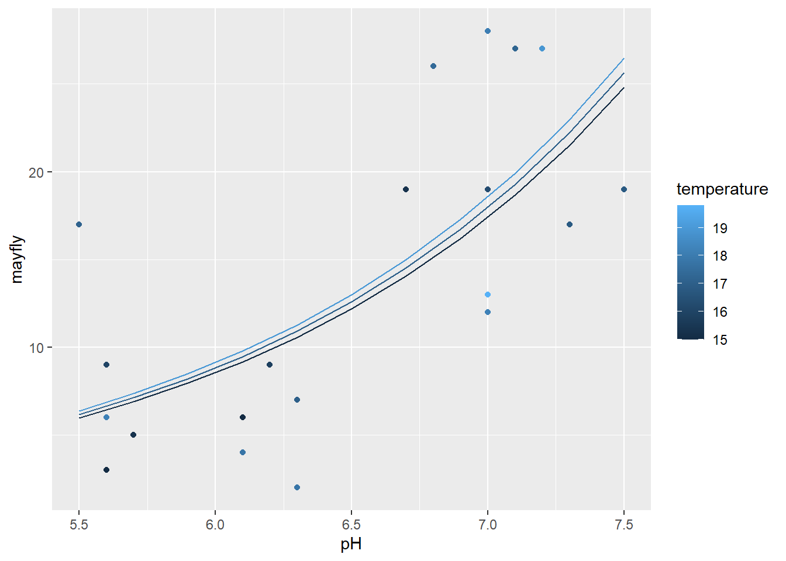
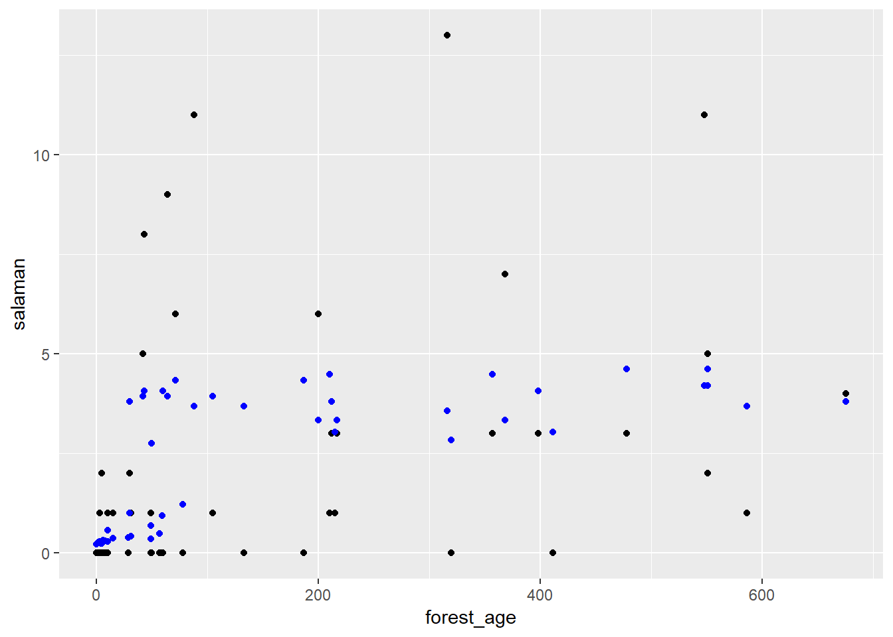

Poisson regression - Solutions
1. Insect communities in streams
The stream_composition.csv dataset shows the number of species of five insect orders in 20 streams, as a function of temperature and pH.
stream <- read.csv("stream_composition.csv")
str(stream)## 'data.frame': 20 obs. of 8 variables:
## $ stream : int 1 2 3 4 5 6 7 8 9 10 ...
## $ pH : num 6.8 5.5 6.3 7.3 7.2 7 7 6.1 6.2 7.5 ...
## $ temperature: num 17.4 17.1 17 16.8 18.9 18.1 16.3 15 15.8 16.8 ...
## $ mayfly : int 26 17 7 17 27 28 19 6 9 19 ...
## $ stonefly : int 4 1 2 6 3 6 4 4 5 3 ...
## $ caddisfly : int 9 23 25 9 16 19 21 21 37 12 ...
## $ diptera : int 30 16 10 25 25 30 19 30 26 12 ...
## $ beetle : int 3 17 1 1 2 21 13 12 5 3 ...- Estimate the effect of temperature and pH on the number of stonefly species, with a Poisson regression using the formula
stonefly ~ temperature + pH. Check if the data is overdispersed and correct your estimates if necessary.
Answer
The \(\chi^2\) value does not deviate significantly from the Poisson model, thus the data are not overdispersed.
mod_plec <- glm(stonefly ~ temperature + pH, data = stream, family = poisson)
chi2 <- sum((stream$stonefly - fitted(mod_plec))^2 / fitted(mod_plec))
1 - pchisq(chi2, mod_plec$df.residual)## [1] 0.6199234The pH has a significant effect.
summary(mod_plec)##
## Call:
## glm(formula = stonefly ~ temperature + pH, family = poisson,
## data = stream)
##
## Deviance Residuals:
## Min 1Q Median 3Q Max
## -2.4042 -0.8017 0.1375 0.6798 1.4567
##
## Coefficients:
## Estimate Std. Error z value Pr(>|z|)
## (Intercept) -0.59407 1.67963 -0.354 0.7236
## temperature -0.06127 0.09709 -0.631 0.5280
## pH 0.45488 0.20123 2.260 0.0238 *
## ---
## Signif. codes: 0 '***' 0.001 '**' 0.01 '*' 0.05 '.' 0.1 ' ' 1
##
## (Dispersion parameter for poisson family taken to be 1)
##
## Null deviance: 23.045 on 19 degrees of freedom
## Residual deviance: 17.705 on 17 degrees of freedom
## AIC: 83.967
##
## Number of Fisher Scoring iterations: 5- What portion of the variance in the number of species is explained by the model?
Answer: About 23% according to the pseudo-\(R^2\).
1 - mod_plec$deviance / mod_plec$null.deviance## [1] 0.2317227- If one of the two variables has a significant effect, interpret the value of the coefficient.
Answer
When the pH increases by one unit, the mean number of stoneflies increases by 57%.
exp(0.45)## [1] 1.568312- Display the observed number of species and the fitted value curves for pH values ranging from 5.5 to 7.5 and for three temperature values: 15, 17 and 19 degrees C.
Hint: With ggplot, to ensure that prediction curves link points with the same value of a numeric variable (e.g. temperature), you must define a group (e.g. group = temperature) in the aes function. You could also convert the temperature to a factor.
Answer
stream_nouv <- expand.grid(pH = seq(5.5, 7.5, 0.2), temperature = c(15, 17, 19))
stream_nouv$pred <- predict(mod_plec, newdata = stream_nouv, type = "response")
library(ggplot2)
ggplot(stream, aes(x = pH, y = stonefly, color = temperature, group = temperature)) +
geom_point() +
geom_line(data = stream_nouv, aes(y = pred))
- Repeat steps (a) - (d) for a model of the number of mayfly species.
Answer
The \(\chi^2\) value indicates significant overdispersion.
mod_may <- glm(mayfly ~ temperature + pH, data = stream, family = poisson)
chi2 <- sum((stream$mayfly - fitted(mod_may))^2 / fitted(mod_may))
1 - pchisq(chi2, mod_may$df.residual)## [1] 8.311314e-07c_hat <- chi2/mod_may$df.residual
c_hat## [1] 3.565674Since the dispersion parameter is less than 4, we can still use the model if we correct the standard errors.
summary(mod_may, dispersion = c_hat)##
## Call:
## glm(formula = mayfly ~ temperature + pH, family = poisson, data = stream)
##
## Deviance Residuals:
## Min 1Q Median 3Q Max
## -3.3591 -1.3744 -0.5432 1.1866 3.5673
##
## Coefficients:
## Estimate Std. Error z value Pr(>|z|)
## (Intercept) -2.36699 1.77332 -1.335 0.181950
## temperature 0.01623 0.09601 0.169 0.865742
## pH 0.71137 0.21074 3.376 0.000737 ***
## ---
## Signif. codes: 0 '***' 0.001 '**' 0.01 '*' 0.05 '.' 0.1 ' ' 1
##
## (Dispersion parameter for poisson family taken to be 3.565674)
##
## Null deviance: 110.95 on 19 degrees of freedom
## Residual deviance: 58.36 on 17 degrees of freedom
## AIC: 148.99
##
## Number of Fisher Scoring iterations: 5The effect of pH is significant. An increase of one unit of pH amounts to a doubling of the mean number of species (\(e^{0.71} = 2.0\)).
The pseudo-\(R^2\) for that model equals \(1 - 58.4 / 111 = 0.47\).
Here are the prediction curves for that model:
stream_nouv$pred_may <- predict(mod_may, newdata = stream_nouv, type = "response")
ggplot(stream, aes(x = pH, y = mayfly, color = temperature, group = temperature)) +
geom_point() +
geom_line(data = stream_nouv, aes(y = pred_may))
- What is the mean number of mayfly species predicted by the model in (e) for a stream with a temperature of 17 degrees and a pH of 8.5? Is this prediction reliable?
Answer
predict(mod_may, data.frame(pH = 8.5, temperature = 17), type = "response")## 1
## 52.22809The prediction conditions are outside the pH range observed in the data (5.5 to 7.5) and the prediction itself is above all observed values for mayfly (maximum of 28 in the data). From a biological point of view, organisms have a certain pH tolerance zone, so we do not expect a doubling of the number of species for each increase of one pH unit to continue outside the observed values.
2. Salamanders in different forest landscapes
 Photo: Bill Bouton
Photo: Bill Bouton
The salamander.csv file contains data from Welsh and Lind (1995) on the number of salamanders (salaman) of species Plethodon elongatus in 47 plots (site), as a function of percentage forest cover (pct_cover) and forest age.
sal <- read.csv("salamander.csv")
str(sal)## 'data.frame': 47 obs. of 4 variables:
## $ site : int 1 2 3 4 5 6 7 8 9 10 ...
## $ salaman : int 13 11 11 9 8 7 6 6 5 5 ...
## $ pct_cover : int 85 86 90 88 89 83 83 91 88 90 ...
## $ forest_age: int 316 88 548 64 43 368 200 71 42 551 ...- From a Poisson regression, estimate the effect of forest cover on the number of salamanders per plot.
Answer
After fitting the model, we check the dispersion of residuals.
mod_sal <- glm(salaman ~ pct_cover, data = sal, family = poisson)
chi2 <- sum((sal$salaman - fitted(mod_sal))^2 / fitted(mod_sal))
1 - pchisq(chi2, mod_sal$df.residual)## [1] 3.766256e-09The data are overdispersed, so we must adjust the coefficient standard errors.
disp <- chi2 / mod_sal$df.residual
summary(mod_sal, dispersion = disp)##
## Call:
## glm(formula = salaman ~ pct_cover, family = poisson, data = sal)
##
## Deviance Residuals:
## Min 1Q Median 3Q Max
## -2.9453 -1.3680 -0.7077 0.6344 3.8388
##
## Coefficients:
## Estimate Std. Error z value Pr(>|z|)
## (Intercept) -1.481957 0.753106 -1.968 0.049092 *
## pct_cover 0.032409 0.008908 3.638 0.000275 ***
## ---
## Signif. codes: 0 '***' 0.001 '**' 0.01 '*' 0.05 '.' 0.1 ' ' 1
##
## (Dispersion parameter for poisson family taken to be 2.730242)
##
## Null deviance: 190.22 on 46 degrees of freedom
## Residual deviance: 121.31 on 45 degrees of freedom
## AIC: 210.36
##
## Number of Fisher Scoring iterations: 5According to these results, every increase of 1% in forest cover increases the mean number of salamanders by about 3% (\(e^{0.032} = 1.032\)).
- Does the
forest_agepredictor improve the predictive power of the model?
Answer
New model with both predictors:
mod_sal2 <- glm(salaman ~ pct_cover + forest_age, data = sal, family = poisson)
summary(mod_sal2)##
## Call:
## glm(formula = salaman ~ pct_cover + forest_age, family = poisson,
## data = sal)
##
## Deviance Residuals:
## Min 1Q Median 3Q Max
## -2.9484 -1.3649 -0.7072 0.6243 3.8417
##
## Coefficients:
## Estimate Std. Error z value Pr(>|z|)
## (Intercept) -1.483e+00 4.573e-01 -3.244 0.00118 **
## pct_cover 3.249e-02 5.735e-03 5.666 1.46e-08 ***
## forest_age -2.111e-05 4.981e-04 -0.042 0.96620
## ---
## Signif. codes: 0 '***' 0.001 '**' 0.01 '*' 0.05 '.' 0.1 ' ' 1
##
## (Dispersion parameter for poisson family taken to be 1)
##
## Null deviance: 190.22 on 46 degrees of freedom
## Residual deviance: 121.30 on 44 degrees of freedom
## AIC: 212.36
##
## Number of Fisher Scoring iterations: 5The effect of forest age is almost zero and not significant. Let’s compare both models with QAIC.
library(AICcmodavg)
disp <- c_hat(mod_sal2)
aictab(list(cover = mod_sal, cover_age = mod_sal2), c.hat = disp)##
## Model selection based on QAICc:
## (c-hat estimate = 2.792027)
##
## K QAICc Delta_QAICc QAICcWt Cum.Wt Quasi.LL
## cover 3 80.47 0.00 0.77 0.77 -36.96
## cover_age 4 82.86 2.39 0.23 1.00 -36.96The model with only forest cover is better.
- Produce a graph of the number of salamanders according to forest age and superimpose points representing the fitted values for the model based solely on forest cover. What do you observe?
Answer
Even if forest_age is not in the model, the fitted number of salamanders is greater in old forests.
# Observed values in black, predicted in blue
ggplot(sal, aes(x = forest_age, y = salaman)) +
geom_point() +
geom_point(aes(y = fitted(mod_sal)), color = "blue") 
- Based on these results, do you think that the forest age directly influences the salamander population? Does it indirectly influence this population?
Answer
Based on our regression in (b), the forest age has no effect once the percentage of forest cover has been taken into account. However, old-growth forests have a higher percentage of forest cover, as seen in the graph below. If we assume that age partly explains the percentage of cover, this variable has an indirect effect on the salamander population.
ggplot(sal, aes(x = forest_age, y = pct_cover)) +
geom_point()